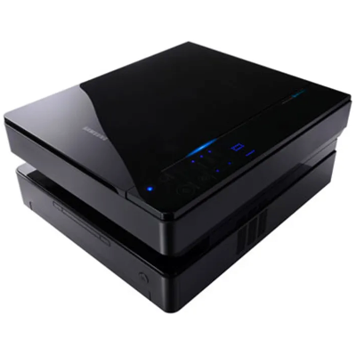

Unsupported printers in MacOS
I have an old printer, a nice Samsung ML-1630; I use it infrequently, but it's essential when I do. I do not keep a exact recollection of the moment I bought it, but that would have been in 2008 or 2009. In 2019 I changed the toner, and in 2020, during the pandemic, my wife used it a lot, so I bought another toner which still remains unopened.
It is a USB printer that is connected when needed to my desktop computer, running Ubuntu 24.04; I wanted to connect it to my new/alternative desktop, a Mac Mini M4, but alas, it lacks driver support. Trying to use older drivers, or drivers for other Samsung printers, didn't work out.
My solution is to have a virtual machine running debian, sharing the printer, which becomes available as a network printer. I tried first to use UTM, but the associated virtual machine could not see the printer. It seems like VMWare Fusion does not support headless virtual machines easily, so I finally used virtualbox. The steps required are as follows:
- Create a virtual machine specifying a debian 12 ISO, using the unattended installation process: enter your username, password and domain, select Guest additions, and create it with 512 Mb memory, 4 Gb disk space, 1 core, with EFI enabled.
- Afterwards, when the machine is complete, specify a folder as shared directory path (vm-shared, ie.) mounted on /mnt/vm-shared, auto-mount, make permanent. This step is optional, my initial idea was to create PDF files in this folder, then send them to the printer with an SSH command.
- In addition, change networking from NAT to Bridge adapter.
- Start the USB printer, connected to the host. In Virtualbox / USB, add under USB device filters the printer; all the values will be automatically filled in: remove all except Name, Vendor Id and Product Id. In remote, select ANY.
- MacOS will ask if you want to allow virtualbox to use the printer; answer Always Allow.
- Start now the virtual machine, and enter as root user
- I found that the unattended installation does not respect the hostname given to the machine, and it uses
vboxby default. To edit it, open/etc/hostnameand/etc/hostsand replace in both the existing name (vbox) with the correct one. - The virtual machine is using DHCP; it is convenient to have it static. You need to find the current IP
address, and the gateway. To get the IP address, just enter:
ip addr show
. To get the gateway:ip route show 0.0.0.0/0 dev enp0s8 | cut -d\ -f3/
- Now edit the file
/etc/network/interfaces, which should look like:source /etc/network/interfaces.d/* auto lo iface lo inet loopback auto enp0s8 iface enp0s8 inet static address 192.168.1.128/24 gateway 192.168.1.254
- Now we need to restart networking, remove the DHCP client, install sudo, generic printer drivers and the printer subsystem, and
enable full access from anywhere>
systemctl restart networking update-rc.d -f dhcpd remove apt-get install sudo usermod -aG sudo coderazzi apt install cups printer-driver-all #install drivers and printing subsystem cupsctl --remote-any --remote-admin # enable full access to cups without authorization cd /etc/cups grep -v Require cupsd.conf > cupsd.conf.norequire mv cupsd.conf cupsd.conf.original mv cupsd.conf.norequire cupsd.conf systemctl restart cups
- Now we add the printer to the virtual machine, using the CUPS web interface; on the host machine, enter the
IP address and port 631 in a browser. In my case:
https://192.168.1.128:631/adminMacOS will issue a warning on the self signed certificate, just go ahead with it. - Go to Add printer, select the printer (Samsung ML-1630 series) and follow the whole setup. IMPORTANT: add it as shared
- In the virtual machine, you can test the whole setup by printing a PDF file:
lpstat -p -d # this will list all the printers lpoptions -d Samsung_ML-1630 # set the printer as default lp PDF_file
- In MacOS, open the system settings, and go to Printers, add Printer. Two printers should appear; in my case:
- Samsung ML-1630 Series (kind: usb)
- Samsung ML-1630 @ vm hostname (kind: Bonjour shared)
- Select the second option, and use it as Generic Postscript Printer.
And that is all! Mind you, this is not a magical solution: it is equivalent to have a 4 Gb driver, consuming 512 Mb memory and 1 cpu full time: What I do is stopping the VM, saving the state. Then, you can print as many pages as required, they will go to the pool (in MacOS). Whenever the VM is restarted, the pool will be printed.